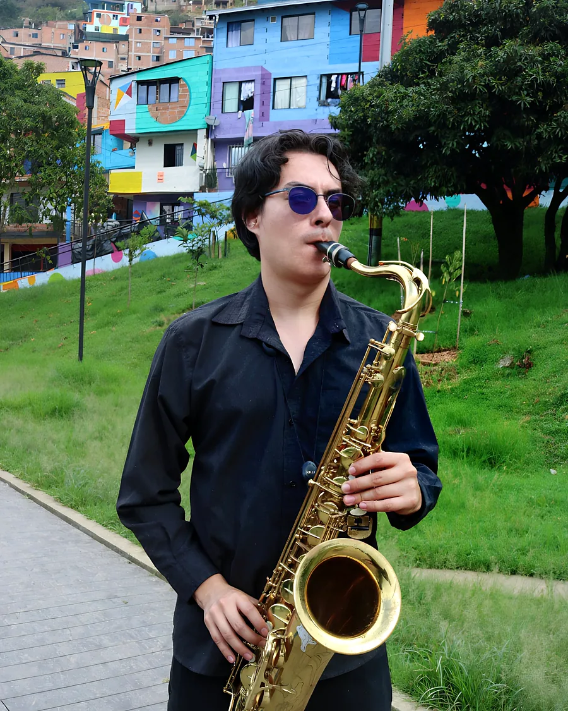

Inicio / ¿Qué instrumento va contigo?
Tu brújula musical / Gratuito
Tu próximo sonido empieza contigo.
¿Qué instrumento encaja en tu día a día?
Ocho preguntas sobre tus gustos y tus condiciones de práctica. Recibirás opciones con sus ventajas y límites, sin porcentajes de “talento” ni promesas de aprendizaje instantáneo.
Comenzar el test →Sin registro. Las respuestas se procesan en tu navegador y no se guardan ni se envían.
